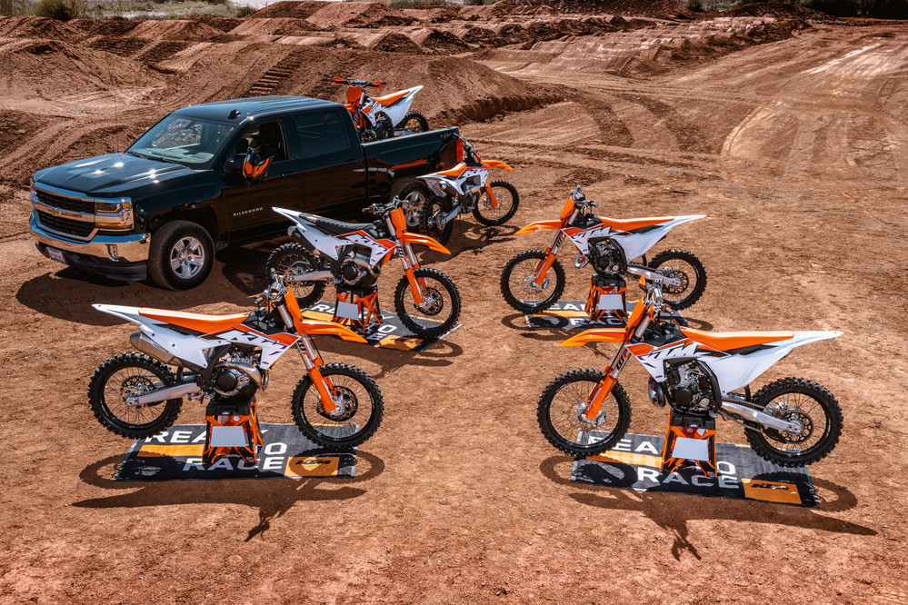

(Motokros je druh motocyklového sportu. Závody se jezdí na uzavřených terénních tratích.
Motocykly jsou speciálně konstruovány pro jízdu v terénu a dělí se do výkonových kategorií podle kubatury.)
Kategorie
Dnes převážně platí rozlišení na kategorie MX1, MX2 a MX3.
MX1
MX1 motocykly kat. I, skupina AI, od 175 cm³ do 250 cm³ pro dvoutaktní motory a od 290 cm³ do 450 cm³ pro čtyřtaktní motory.
MX2
MX2 motocykly kat. I, skupiny AI, od 100 cm³ do 125 cm³ pro dvoutaktní motory a od 175 cm³ do 275 cm³ pro čtyřtaktní motory.
MX3
MX3 je také nazývána OPEN, neboli neomezená. Kategorie MX3 motocykly kat. I, skupiny AI, od 290 cm³ do 500 cm³ pro dvoutaktní motory a od 475 cm³ do 650 cm³ pro čtyřtaktní motory. Motocykly kategorie MX1 a MX2 se také mohu zúčastnit soutěží třídy MX3.

- (Motokros je druh motocyklového sportu. Závody se jezdí na uzavřených terénních tratích.
- Motocykly jsou speciálně konstruovány pro jízdu v terénu a dělí se do výkonových kategorií podle kubatury.